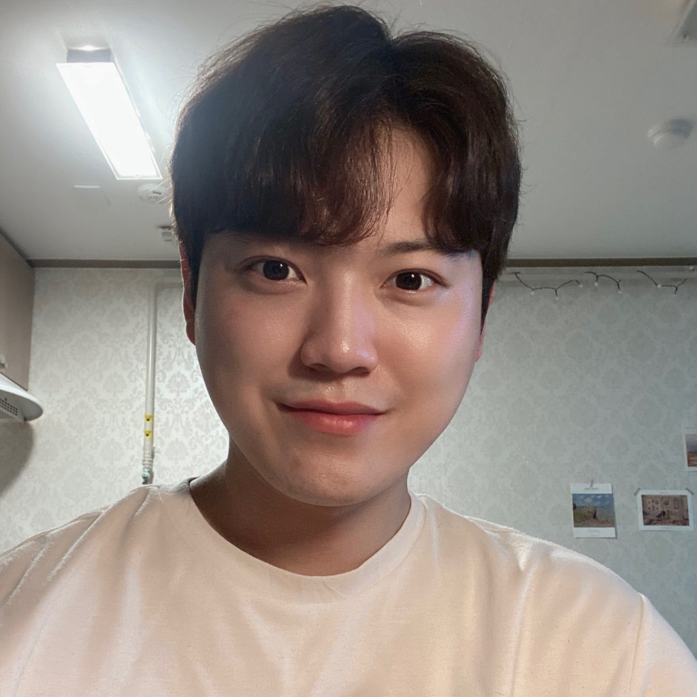
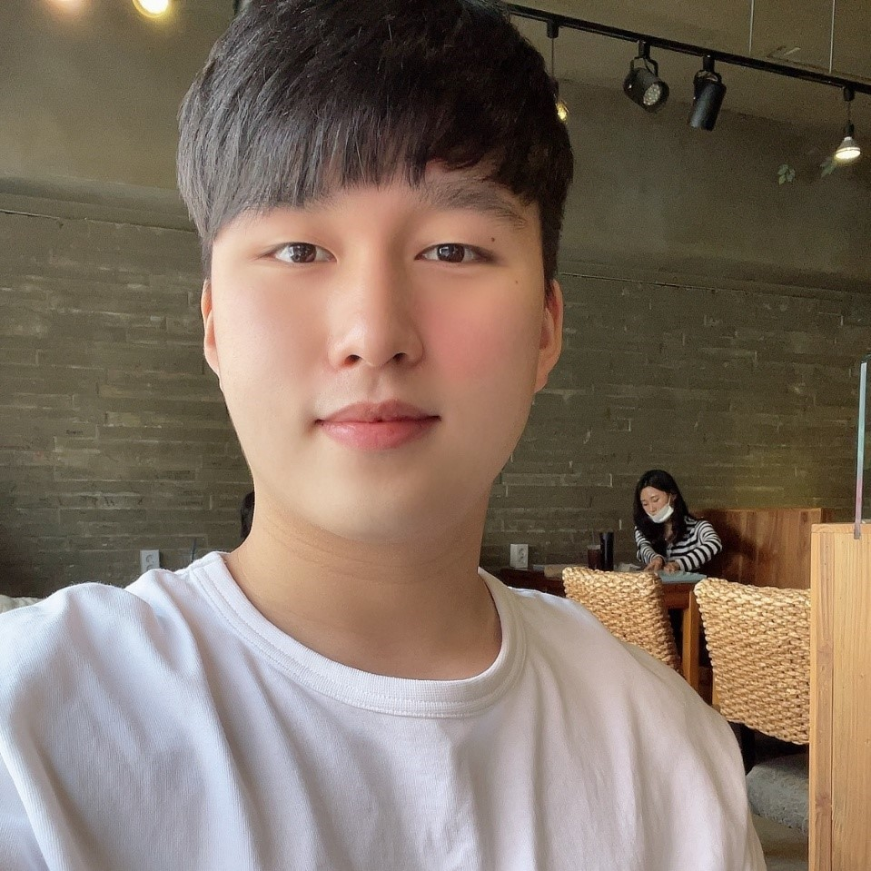
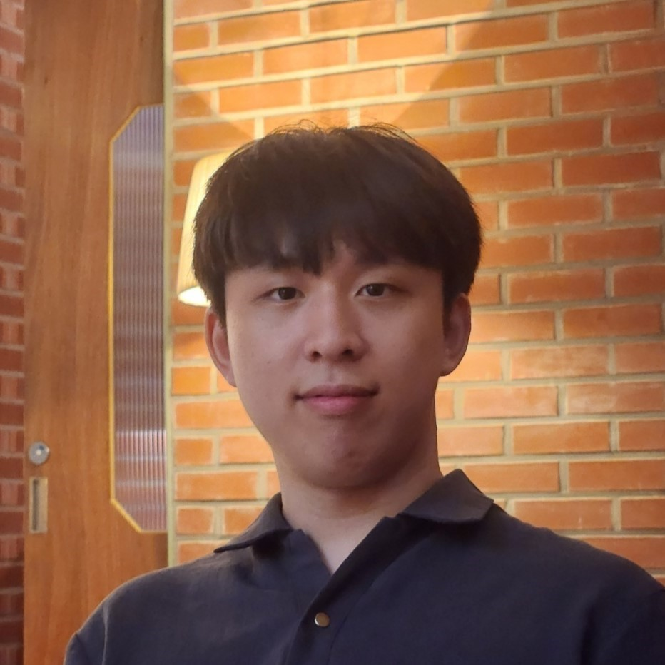
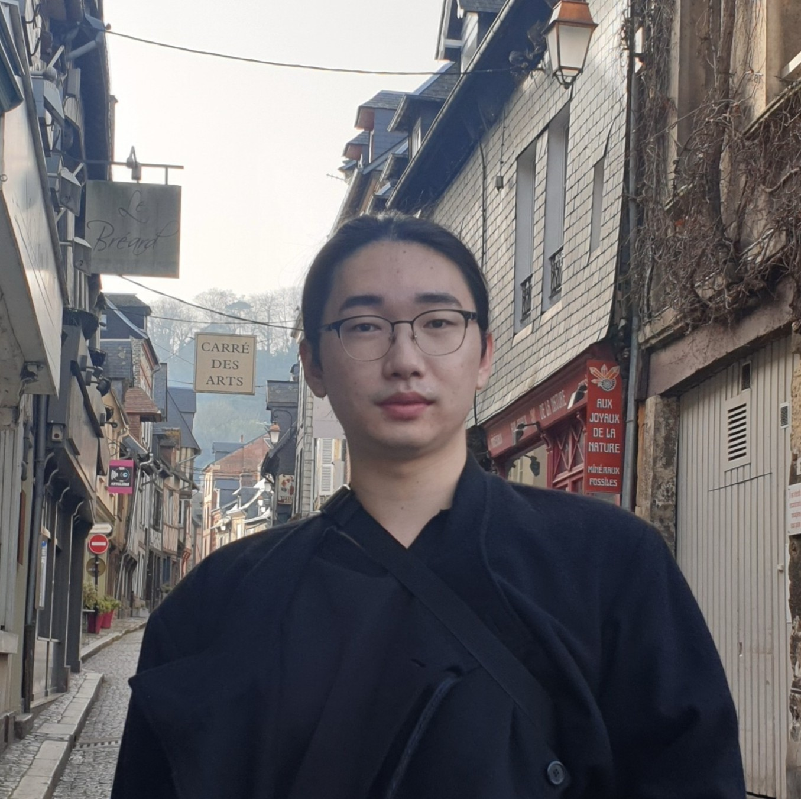

Members
Current Members
Ph.D. Students
Seonghwi Kim (Sep 2019 - )
|
Junhyeok Choi (Mar 2020 - )
|
Hyeok Kyu Kwon (Mar 2020 - )
|
|  | Dongguen Kim (Mar 2020 - )
|
 |
Jeyong Lee (Mar 2020 - )
|
|  | Sung Ho Jo (Sep 2021 - )
|
Jeongjik Lee (Mar 2022 - )
|
M.S. Students
|  | Wonsang Yun (Mar 2025 - )
|
|  | Myeonggu Kang (Sep 2025 - )
|
 |
Yechan Chang (Mar 2026 - )
|
Sunggyoo Yoon (Mar 2026 - )
|
Alumni
Ph.D. Students
M.S. Students
Myeongsoo Kim (Sep 2022 - Feb 2024), Ph.D. Student at POSTECH
Jaeseung Yang (Mar 2023 - Fed 2025), MINDs and company
Suhyun Park (Sep 2022 - Feb 2024), Multicampus
Hye-young Kim (Sep 2022 - Feb 2024), SK hynix
Somin Lee (Sep 2022 - Feb 2024), KT
Kyungmin Kim (Mar 2022 - Feb 2024), Ph.D. Student at POSTECH
Yejin Kim (Mar 2021 - Feb 2023), Samsung Research
Heejin Kim (Mar 2020 - Feb 2022), Shinhan Bank